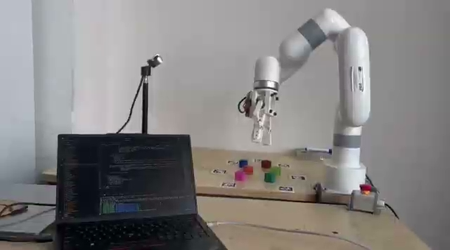

01 — ROBOTICS / LOCALIZATION
Autonomous golf cart localization
Comparing LiDAR, camera and inertial approaches to help a campus vehicle estimate where it is, and when to trust that estimate.
ROSSLAMLiDAR + IMU
B.Tech Computer Science · IIIT Delhi
I build and study systems that connect software to the real world — from robot perception to embedded electronics.

OBJECT TARGETRGB · LIVE VIEW01 SELECTED WORK
Comparing LiDAR, camera and inertial approaches to help a campus vehicle estimate where it is, and when to trust that estimate.
Combining visual feature matching and geometric alignment to build steadier RGB-D reconstructions.
Running object detection near cameras and sharing compact tracking data between devices.
STM32 sensing, LoRa telemetry, and a ground station for viewing live flight data.
Comparing image models and visual features to understand how wildlife categories are represented.
Turning camera-based object location into a target the robot arm can reach. Team project; my focus was calibration and coordinate transforms.
02 EXPERIENCE
IIIT Delhi Vision Lab · Autonomous vehicle localization and mapping
IIIT Delhi IRAS HUB · Edge AI and multi-camera tracking
Indraprastha Institute of Information Technology, Delhi
03 SKILLS / CURRENT TOOLKIT
What I’ve been learning and using across research, coursework and hands-on projects.
Image processing, camera geometry and visual features.
Estimating motion and connecting sensor frames to the world.
Training and comparing models, embeddings and inference paths.
Working close to devices, sensors and real-time software.
05 GET IN TOUCH
I'm open to internships, research opportunities and interesting engineering collaborations.
ayush23160@iiitd.ac.in ↗